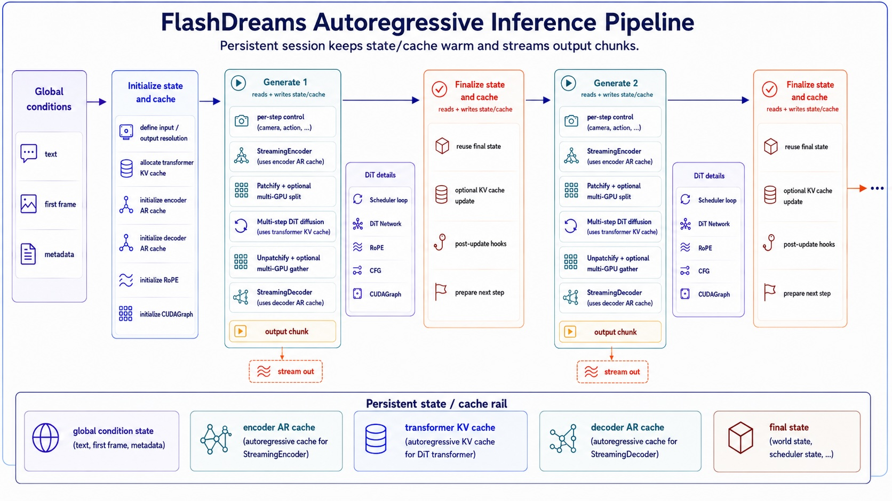

Stream inference pipeline
This page outlines the major computation flow in the FlashDreams inference pipeline. It outlines the core concepts and APIs for building custom model integrations, or modifying existing ones.
This is the low-level model pipeline used behind an api_v2 model loop. See
the Demo Application API reference
for the public application contracts above it.

The key entry point for the inference pipeline is the
~flashdreams.infra.pipeline.StreamInferencePipeline class, which defines the
autoregressive generation loop shown in the figure. The persistent state is held in
~flashdreams.infra.pipeline.StreamInferencePipelineCache as a cache object,
which is shared within the pipeline and updated in each autoregressive step.
from flashdreams.infra.pipeline import (
StreamInferencePipeline,
StreamInferencePipelineCache,
)
pipeline: StreamInferencePipeline = ...
# Initialize component caches with already-prepared rollout context.
cache: StreamInferencePipelineCache = pipeline.initialize_cache(
transformer_context={"text_embeddings": text_embeddings},
encoder_context={},
decoder_context={},
)
# Autoregressive generation loop
for autoregressive_index, control in enumerate(controls):
current_output = pipeline.generate(autoregressive_index, cache, input=control)
yield current_output
pipeline.finalize(autoregressive_index, cache)
The code snippet above shows the generic execution loop. The initial call
~flashdreams.infra.pipeline.StreamInferencePipeline.initialize_cache
forwards the three context dictionaries to the transformer, encoder, and decoder
cache initializers. Recipe-specific subclasses can expose higher-level arguments;
for example, WanInferencePipeline.initialize_cache accepts raw text and an
optional first frame and prepares the transformer context internally. Then, for each autoregressive step,
~flashdreams.infra.pipeline.StreamInferencePipeline.generate is called to produce the current output chunk,
followed by ~flashdreams.infra.pipeline.StreamInferencePipeline.finalize. This split exists because
~flashdreams.infra.pipeline.StreamInferencePipeline.finalize typically handles additional KV
cache updates that are not in the hot path, which can be offloaded to a background thread in many
cases to hide latency.
Inside ~flashdreams.infra.pipeline.StreamInferencePipeline.generate, the pipeline encodes the
per-step control input, runs the diffusion model's denoising loop, and decodes the latent chunk into
the final output. The following snippet illustrates this internal flow:
# class StreamInferencePipeline
def generate(
self, autoregressive_index: int, cache, input=None,
) -> torch.Tensor:
# 1. Convert per-step control into model conditioning
if input is not None:
input = self.encoder(
input=input,
autoregressive_index=autoregressive_index,
cache=cache.encoder_cache,
)
# 2. Run scheduler loop + DiT flow prediction
clean_latent, final_state = self.diffusion_model.generate(
autoregressive_index=autoregressive_index,
cache=cache.transformer_cache,
input=input,
)
cache.final_state = final_state
# 3. Convert latent chunk to output chunk
if self.decoder is None:
return clean_latent
return self.decoder(
input=clean_latent,
autoregressive_index=autoregressive_index,
cache=cache.decoder_cache,
)
In FlashDreams, these components are composed using a configuration system. This allows building
customized pipelines by supplying different configurations for the encoder, diffusion model, and decoder.
A typical ~flashdreams.infra.pipeline.StreamInferencePipelineConfig is instantiated as follows:
from flashdreams.infra.diffusion.model import DiffusionModelConfig
from flashdreams.infra.diffusion.scheduler.fm import FlowMatchSchedulerConfig
from flashdreams.infra.pipeline import StreamInferencePipelineConfig
# Supply configs for the encoder, transformer, and decoder.
MyStreamingEncoderConfig = ...
MyTransformerConfig = ...
MyStreamingDecoderConfig = ...
# create a pipeline config
pipeline_config = StreamInferencePipelineConfig(
name="customized-method-name",
encoder=MyStreamingEncoderConfig(),
diffusion_model=DiffusionModelConfig(
transformer=MyTransformerConfig(),
scheduler=FlowMatchSchedulerConfig(),
),
decoder=MyStreamingDecoderConfig(),
)
# then a pipeline can be simply instantiated as follows:
pipeline = pipeline_config.setup().to("cuda").eval()
More details are in Demo configuration.
Examples
Samples on how existing models use this structure:
- NVIDIA OmniDreams config: An I2V video model with a VAE-based causal encoder for HDMap control.
- LingBot-World config: A camera-controlled I2V model that uses the per-step camera encoder.
- Self-Forcing config:
A pure T2V model that sets
encoder=None, so each rollout starts from noise. - Wan2.1 config: Treats a bidirectional video model as a single-rollout autoregressive model.
To add an implementation, follow Create a model. To make it selectable by a demo, continue with Demo configuration.